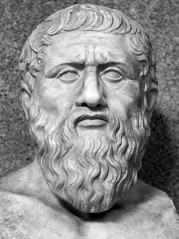

Platon (MÖ 427-347) V. yüzyıl Atina’sında zengin bir ailenin çocuğu olarak dünyaya geldi. Onun mevkisindeki genç bir Atinalıdan siyasetle uğraşması beklenirdi; ama Platon bunun yerine hocası Sokrates’in (MÖ 470-399) izinden giderek filozof oldu.

Platon’un felsefi yazıları, iki veya daha fazla karakterin felsefi bir sorunu tartıştığı diyaloglardan oluşur. Diyalogların çoğunda ana karakter Sokrates’tir. Platon’un diyaloglarda hiç konuşmamasından dolayı araştırmacılar şu soruyla karşılaşırlar: Platon’un Sokrates’in ağzından dile getirdiğinin acaba ne kadarı Platon’un kendi felsefesiydi ve ne kadarı sadece Sokrates’ten aktardığıydı? Birçok bilgin Platon’un erken dönem diyaloglarının, Sokrates’in öğretilerinin tarihsel olarak titiz bir özeti olduğuna inanır. Sokrates’in sonraları Platon’un kendi amaçları için edebi bir karakter haline geldiğine inanmışlardır.
Platon, idealar kuramı ile bilinir, yani soyut, maddi olmayan şeyler bu dünyadaki fiziki nesneler tarafından taklit edilir.
Platon’un felsefesine ait diğer bilinen bir görüş ise tüm bilginin hatırlamadan ibaret olduğudur. Platon, ruhun maddi olmadığına ve bir bedene yerleşmeden önce de var olduğuna inanmıştır. Cisimleşmeden önce ruh, duyumsal bir algılamayla sınırlandırılmadan ve ilgisi başka bir tarafa yönlendirilmeden, ideaları biliyordu. İnsan doğuştan bir şeyleri bilir ve ruhlar cisimleşmeden önce bildiklerini yeniden hatırlar.
Ayrıca Platon ruhu yeme, içme ve cinsellik gibi duyusal zevkleri arzulayan iştahsal kısım; şan ve şeref arzulayan irade kısmı; ideaları anlamayı arzu eden akılsal kısım olmak üzere üçe ayırır. Devlet’te Platon adil bir ruh ve adil bir devlet arasında kapsamlı bir benzetme kurarak ruh için adil olmanın ne demek olduğunu anlatmıştır. Platon ideal adil bir devleti, ruhun bu üç kısmına karşılık gelen yurttaş gruplarına sahip olması ile tanımlar. Bu grupların insan ruhunda olduğu gibi birbirleriyle uyumlu bir biçimde etkileşimde bulunması gerektiğine inanmıştır. Platon hem ruhta hem de devlette akılsal yanın hakim olmasını savunur.
EK BİLGİLER:
1. Platon, diyaloglarının sadece birisinde ortaya çıkar. Bu ise, Sokrates’in ölüme mahkum edildiği ‘Sokrates’in Savunması’ (Apology) adlı diyaloğudur. Platon bu diyalogda hiçbir şey söylemez ama kendisinin dahil olması olayların olduğu sırada orada bulunduğunu gösteriyor.
2. Platon, Aristoteles’in (MÖ 384-322) hocasıdır.